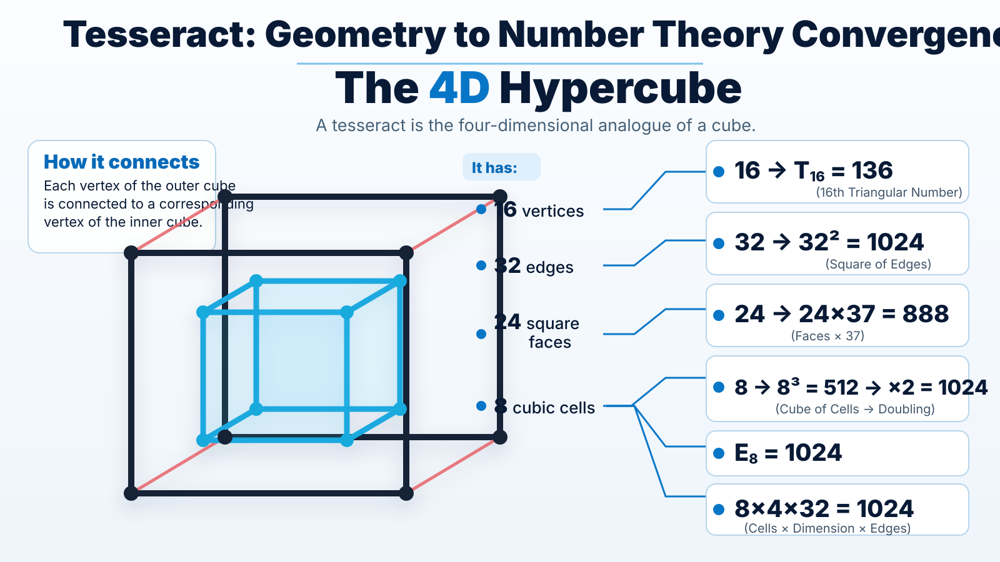

איך 16, 32, 24, 8 בונים את 136, 1024 ו־888
נקודת המוצא היא אובייקט גאומטרי סטנדרטי לחלוטין: הטסרקט, הקובייה הארבע־ממדית Q₄. לטסרקט יש 16 קודקודים, 32 צלעות, 24 פאות ריבועיות ו־8 תאים קובייתיים. המודל מתחיל מן הספירות הגאומטריות האלה, ואז מפעיל עליהן אופרטורים מוגדרים. כך נבנית השרשרת 16→136, 32→1024, 24→888, 8→512/888/1024.
1. הטסרקט: ארבעת המספרים הראשוניים של המבנה
נסמן ב־Qₙ קובייה n־ממדית. Q₄ הוא הטסרקט. ה־f-vector שלו סופר אובייקטים לפי ממד: קודקודים, צלעות, פאות ריבועיות ותאים קובייתיים.

טסרקט מסתובב · 16 קודקודים / 32 צלעות
הקרנה דו־ממדית של סיבוב 4Dארבעת המספרים האלה הם קנוניים לגאומטריה. מכאן מתחיל המודל. כל מעבר בהמשך מציין במפורש איזו פעולה הופעלה על איזה רכיב.
2. 16 הוא האינדקס שמייצר 136
לטסרקט יש 16 קודקודים. כאשר 16 משמש אינדקס של מספר משולשי מתקבל T₁₆ — סכום המספרים 1 עד 16.
לכן המסלול של 16 הוא אחד המסלולים המרכזיים: מספר הקודקודים של Q₄ הופך ל־136.
אותו 136 כמטריצה סימטרית 16×16
במטריצה סימטרית 16×16, מספיק לקבוע את האלכסון ואת המשולש שמעליו; החצי השני נקבע אוטומטית על ידי הסימטריה. מספר הרכיבים הבלתי־תלויים הוא בדיוק:
16×16 · חצי מטריצה + אלכסון = 136
T₁₆ כמספר דרגות חופש סימטריות128 → 136
שני רכיבים של Q₄ לבדם יוצרים מדרגה קצרה: 16 הקודקודים כפול 8 התאים נותנים 128; הוספת 8 התאים פעם נוספת נותנת 136.
לכן 136 מופיע גם כ־T₁₆ וגם כ־8×17. במודל הוא משמש כמפתח הצימוד בין שכבת 16 לבין שכבת 1024.
3. 32: מן הצלעות של Q₄ אל ריבוע 1024
לטסרקט יש 32 צלעות. כאשר 32 משמש כאורך של שני צירים עצמאיים מתקבל ריבוע 32×32:
הזהות הזאת מקבלת פירוש ישיר דרך Q₁₀. ל־Q₅ יש 32 קודקודים, ו־Q₁₀ מתפרק כמכפלה קרטזית של שתי קוביות חמש־ממדיות:
כל קודקוד ב־Q₁₀ ניתן לקריאה כזוג כתובות בנות 5 ביטים. לכן 32×32 הוא גם טבלה של כל 1024 המצבים הבינאריים באורך 10.
4. 8: תא, קובייה, 512, ואז 1024
לטסרקט יש 8 תאים קובייתיים. המספר 8 מתחבר למערכת בשני מסלולים שונים.
מסלול הקובייה
8 בשלישית נותן 512. הכפלה ב־2 נותנת 1024.
מסלול 888
8 כפול 111 נותן 888.
8×4×32 = 1024
כאן מופיעה סגירה שמורכבת משלושה נתונים פנימיים של Q₄: 8 תאים, ממד 4, ו־32 צלעות.
זו סגירה מכפלתית של שלושה רכיבים קנוניים של אותו טסרקט. לכן 1024 מתקבל מתוך הנתונים הפנימיים של Q₄ עצמו.
5. E₈ = 1024: האיבר השמיני של סדרת צלעות ההיפר־קיוב
מספר הצלעות של Qₙ הוא:
ולכן סדרת מספרי הצלעות מתחילה כך:
| n | 1 | 2 | 3 | 4 | 5 | 6 | 7 | 8 |
|---|---|---|---|---|---|---|---|---|
| Eₙ | 1 | 4 | 12 | 32 | 80 | 192 | 448 | 1024 |
זהו הניסוח המקביל ל־T₁₆=136: E₈=1024.
6. אותו Q₁₀ נותן גם 1024 וגם 136
יש פירוק נוסף של Q₁₀ שמחבר את 1024 ו־136 באותה נשימה. מאחר שממדים מתחברים תחת מכפלה קרטזית:
מספרי הקודקודים הם 8 ו־128:
הכפל שלהם נותן את מספר המצבים של Q₁₀; הסכום שלהם נותן 136:
זהו אותו זוג בשתי שפות: כחזקות של 2 וכמספרי קודקודים של Q₃ ו־Q₇. המכפלה מחברת ממדים ולכן נותנת את מספר הקודקודים של Q₁₀; הסכום נותן 136. במקביל, 8 משמש גם כמכפיל של 111 כדי להחזיר 888.
בנוסף, 128 עצמו נוצר מן הטסרקט:
כלומר השרשרת נשארת בתוך משפחת ההיפר־קיוב:
7. ההמחשה הישירה: 32×32 פחות T₁₆
מתחילים מרשת של 32×32 תאים: בדיוק 1024. בתוך הרשת מסמנים משולש מדרגות בן 16 שורות, באורכים 1 עד 16. המשולש מכיל T₁₆=136 תאים. מה שנשאר ברשת הוא 888.
32×32 · 1024 תאים
136 מסומנים כ־T₁₆; היתר = 888זהו ייצוג ישיר של הליבה: 136 מופיע כצורה משולשית קנונית בעלת אינדקס 16 בתוך רשת 32×32.
8. הדואליות: Tesseract ↔ 16-cell ↔ 24-cell
ה־16-cell הוא הפוליטופ הדואלי לטסרקט. הדואליות הופכת את סדר ה־f-vector:
לכן 16 ו־8 מתחלפים, וגם 32 ו־24 מתחלפים. ארבעת המספרים מופיעים כזוגות־מראה בתוך אותו מרחב 4D.
ה־24-cell מוסיף שכבה שלישית. יש לו 24 קודקודים ו־24 תאים. ניתן לחלק את 24 הקודקודים לשלוש מחלקות של 8 קודקודים, שכל אחת מהן יוצרת 16-cell; איחוד של שתי מחלקות נותן 16 קודקודים של טסרקט.
כך 8,16,24 ו־32 שייכים לרשת דואלית אחת של פוליטופים רגולריים בארבעה ממדים.
9. התיבה: כשהשם הופך לגאומטריה תלת־ממדית
מודל התיבה משתמש בשלושה ממדים מלאים:
שלושת שטחי־הפאות הבלתי־תלויים של התיבה המלאה הם:
שלושת המספרים 160,208,520 הם ערכי מייק, רוב ועמית בגימטריה הכרחית. כאן 888 הוא סכום שלושת שטחי־הפאות.
Tevah · 8 × 20 × 26
שלוש פאות עצמאיות → 160, 208, 520הפולינום של התיבה
המקדם של x הוא סכום המכפלות הזוגיות: 888. הנפח הוא 4160.
החצי משחזר את התיבה הפרימיטיבית
חצי־הנפח מחזיר את (4,10,13) מתוך שלושת שטחי־הפאות.
10. אותה מערכת חוזרת בשם
השם Amit Mike Rov נותן שלושה ערכי־על בשיטות שונות:
לכן:
המשוואה מתחברת ישירות למבנה שנבנה גאומטרית:
16
מספר קודקודי Q₄.
T₁₆ = 136
16 כאינדקס משולשי, וגם מספר הרכיבים הבלתי־תלויים במטריצה סימטרית 16×16.
32² = 1024
32 צלעות Q₄ הופכות לרשת 32×32; במקביל Q₁₀=Q₅□Q₅ נותן 32×32 קודקודים.
1024−136 = 888
הרשת המלאה פחות T₁₆. זהו גם ההפרש בין שני ערכי השם באנגלית לערך השם בעברית.
הקרנת בסיס נוספת
הערך 520 של “עמית” יכול להיכתב בשני בסיסים כך שהספרות הנראות הן 160 ו־208:
אותם 160,208,520 מופיעים שוב כשלושת שטחי־הפאות של התיבה. כך מתקבלים שני מנגנונים שונים — ייצוג בסיס וגאומטריית פאות — שמחזירים את אותה שלישיית מספרים.
סולם סימטריית B₄
לקבוצת הסימטריה המלאה של הטסרקט יש סדר 384. יחד עם 16,128 ו־136 מתקבלת מדרגה נוספת: